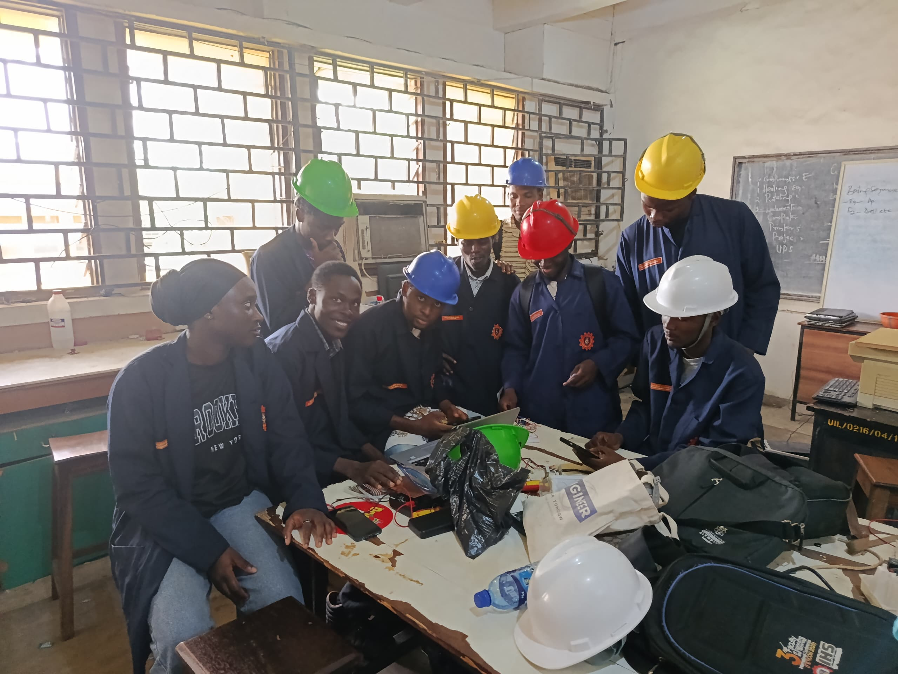

TRANSIT.
Dual NFC Card & Dynamic QR Bus Fare Validation Architecture with Edge IoT Telematics.
Over 30,000 university students rely on campus shuttle buses daily. Physical cash payments cause severe cash-change shortages, delayed boarding queues, fare dispute friction, and untracked driver revenue leakages.
The Hyperion Solution: A unified digital wallet pegged at ₦250 = 1 Ride Point. Students authenticate via physical NFC student ID or dynamic driver QR code for instantaneous, cashless boarding.
Sub-second tap-and-go boarding accelerates passenger entry by over 80% compared to cash handling.
All transactions sync to university administrative consoles with zero physical cash leakage.
React Native & Next.js PWA. Instant camera QR scanner, live wallet balance, Paystack virtual account transfer details, and real-time bus capacity radar.
Dedicated bus entry validator running FreeRTOS with PN532 RFID/NFC, SSD1306 OLED, audio-visual feedback, and solenoid barrier unlock triggers.
High-throughput REST API with atomic MongoDB transactions. Routes both phone QR scans and headless hardware RFID taps through unified endpoints.
Automated dedicated bank account generation per student, Webhook signature verification, real-time fleet telematics, and administrative audit dashboards.

Instead of relying on driver phone screens, the physical Hyperion Validator Pod is hard-mounted at the bus passenger entry. Students tap their RFID smart cards or NFC phones for instantaneous boarding verification.

Eliminating overcrowded stops by broadcasting real-time bus seating occupancy directly to student mobile apps before the bus arrives.
When buses enter campus basement workshops or cellular dead zones, the ESP32 automatically enters localized offline mode without blocking boarding.
Pre-cached cryptographic student UID whitelist in ESP32 SPIFFS/LittleFS flash memory validates passenger cards in under 45 milliseconds.
Onboard battery-backed Real-Time Clock signs each tap with an immutable monotonic sequence counter to prevent replay attacks and clock skew.
Once 4G LTE or campus Wi-Fi signal is re-established, the pod flushes its queued transactions to the cloud backend for atomic reconciliation.

The Hyperion Pod functions as a full-featured transit black-box, streaming real-time vehicle telemetry to administrative dashboards and student route trackers.
Every student receives a personal Wema/Titan bank account number linked to their matriculation profile.
Students transfer any amount (e.g. ₦1,000 → 4 points) via USSD, OPay, Palmpay, or commercial banking apps.
HMAC SHA-512 Paystack signature verification credits wallets in under 2 seconds with automatic leftover kobo pooling.
Physical top-up fallback station allowing accredited university agents to credit student accounts on site.
| System Feature | Cash / Paper Tickets | Generic Ride Apps | Commercial POS | Hyperion Transit |
|---|---|---|---|---|
| Boarding Speed | 15 – 30 seconds | 8 – 15 seconds | 10 – 20 seconds | < 0.5 seconds (NFC Tap) |
| Offline Resilience | No tracking | Fails completely | Fails completely | Store & Forward (RTC Cache) |
| Hardware Integration | None | None | Closed POS terminal | ESP32 + ToF + GPS + OLED |
| Passenger Counting | Manual estimation | None | None | Automated Dual ToF Laser |
| Audit & Reconciliation | High leakage (>20%) | Cloud only | Delayed settlement | 100% Real-Time Ledger |
Hardware SPI interface allows ultra-low latency card UID extraction.
Robust fault tolerance with idempotency keys prevents duplicate billing.
Tap student RFID card on the ESP32 validator. The OLED displays "₦250 Deducted | 4 Pts Remaining", buzzer double-beeps, and green LED activates.
Open student mobile camera, scan the driver’s rotating boarding QR code. Wallet updates instantly with zero PIN friction required.
Transfer ₦500 from a real bank app to the student’s dedicated NUBAN. Paystack webhook fires and credits 2 ride points within seconds.
Admin laptop console reflects real-time trip logs, vehicle GPS locations, passenger occupancy, and financial reconciliation.
Cashless.
Connected.
Hyperion delivers a reliable, robust, and scalable transit ecosystem engineered specifically for African university campuses.
Department: Electrical & Computer Engineering
Exhibition: SWEP 200 Group H (2026)
Institution: University of Ilorin, Nigeria
Repository: github.com/hyperion-transit